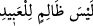

“önceden yapıp ettiklerin yüzündendir.” İnkârın ve işlediğin günahlar sebebiyledir,
denilir. Âyette bu fiillerin ellere () isnâdı, kazanmanın/yapıp etmenin genellikle
ellerle olduğu içindir. Vaîdi te’kid ve tehdidi kuvvetlendirmek için bu sözün iltifât[6]
bâbından olması da mümkündür.
“Elbette Allah kullarına haksızlık edici değildir.” Yâni durum şu ki kendileri
tarafından bir günah olmadan Allah Teâlâ kullarına azâb edici değildir.
Eğer: “Zulmün aslının olmadığını ifâde etmek için “ denilmesi daha
uygundu. O’nun zulümde aşırı giden ve mübâlağa eden olmadığını söylemek, zulmün
temelden olmadığını ifâde etmez.” dersen, ben şöyle cevap veririm: Kasdedilen zulmün
aslının olmadığını belirtmektir. Mübâlağa lafzının zikredilmesi, kulların çok olmasından
dolayıdır. Onlardan her birine bir zulüm isâbet ettiği için onlara göre zâlim çok
zulmeden olmuş olur. Çünkü “el-Abîd” kelimesi bütün kullara delâlet eder. Şu halde bu
ifâdenin mânâsı, ‘O, buna ve sayılamayacak kadar başkalarına zulmedici değildir’ olur.
Yine kullarından günahkâr olanlara azâb etmek ve iyilik yapanlara da iyilikte bulunmak
Allah Teâlâ’nın adâletindendir. Cezayı fazla vermez, ecir ve mükâfâtı da azaltmaz.
Fakat kesin olan vaadine binâen eğer azâbı hak etmeyene azâb edecek olursa O’nun az
zulmü, onu işlemekten müstağnî ve böyle bir çirkinlikten münezzeh olması sebebiyle
elbette çok olur. Nitekim “Âlimin zellesi/sürçmesi, büyük günah sayılır.” denir. Merfû
bir rivâyette şöyle buyrulmuştur: “Allah Teâlâ buyurur ki: “Ben zulmü kendime haram
kıldım. Onu kullarıma da haram kıldım. O halde birbirlerine zulümde
bulunmasınlar.”[7] ‘Kimin zulmü ve saldırganlığı artarsa helâki ve fenâsı yakın olur’
derler. İnsanların en şerlisi zâlime yardım eden ve mazlûmu yardımsız bırakandır.
Âyette işâret vardır ki kullar ibâdet ve talebi kendi yerinden başkasına koyarak
(Allah’tan başkasına ibâdet edip onları taleb ederek) kendi nefislerine fazlasıyla
zulmedicidirler. Nitekim Allah Teâlâ “Biz onlara zulmetmedik, fakat, onlar
kendilerine haksızlık ediyorlardı.” (en-Nahl, 16/118) buyurmuştur.
Molla Câmî der ki:
Bizim mihrablarda secde etmekten kasdımız, senin kaşındır
Eğer niyet hâlis olmazsa, amelden elde edilecek nedir?
Bilesin ki münâfık, murâî, hevâ ve bid‘at ehli kimselerle tartışmak yerilmiştir. Fakat
Allah’ı tanımak, şüpheleri gidermek, Allah Teâlâ’ya giden yolu açıklamak konusunda
Allah’ı bilme ilmi, Nebîsi (a.s.)’ın rehberliği, nûru ile hakkın bâtıldan ayrılıp ortaya
çıktığı ışık saçan bir kitabın nassının şâhidliği ile münâkaşa eden kimsenin tartışması
övülmüştür.
Bâzıları der ki: Senedi açıkça ortaya çıktıktan sonra sünnette gelen bir şeyi araştırıp
incelemek, araştıran kimseyi dinde aşırı derine ve ileri gitmeye sürükler. Çünkü bu,
ümmetten kendilerine parlak bir zihin ve tenkid edici bir mizac verilmeyen çokları için
dalâletin anahtarıdır. Geçmiş ümmetler ancak uzun uzadıya münâkaşalar ve çok dedi